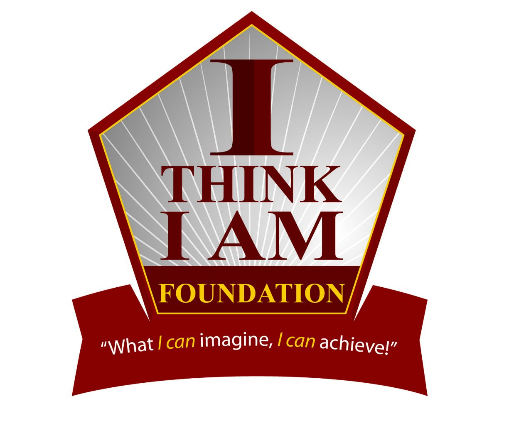
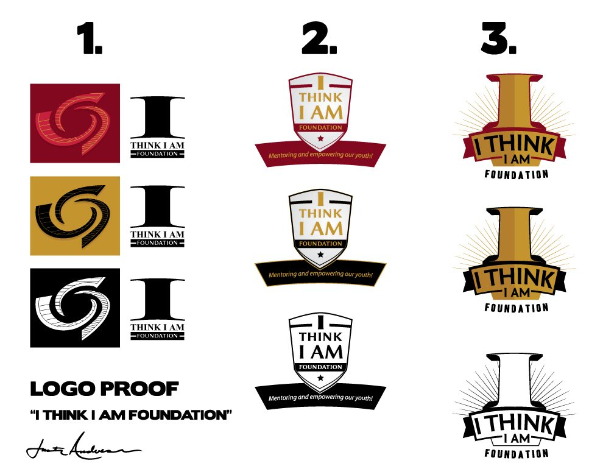
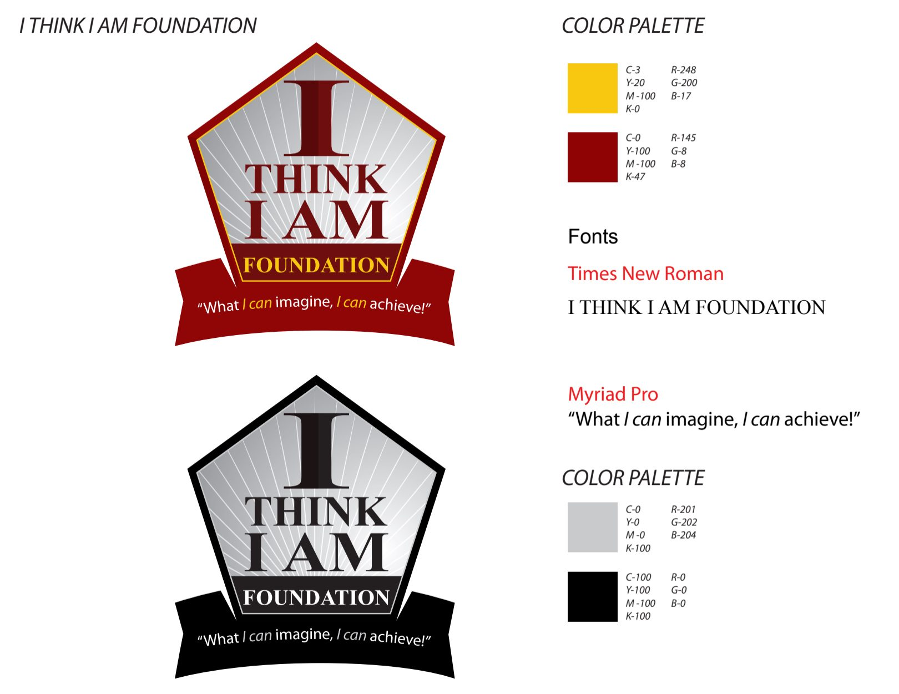

Logo Identity Case Study
I Think I Am Foundation
An iconic logo identity developed to feel motivational, established and forward-looking. The process moved through several distinct visual directions before arriving at a structured badge whose central symbol can carry recognition beyond the full organization name.
Logo Type: Iconic Logo
Back To Logos

01 / Exploration
Logo Proofs
Three Different Ways Into The Idea
The early proof stage explored three very different directions: a compact abstract symbol and wordmark, a shield-style badge, and a bold dimensional letterform. Testing distinct structures at the beginning helped reveal which approach carried the strongest sense of purpose and credibility for the foundation.

02 / Refinement
Chosen Direction
Turning The Badge Into A System
The shield-inspired direction became the foundation for the finished identity. From there, the typography, radiating line work, banner treatment and supporting colors were refined together so the mark could feel unified rather than assembled from separate parts.

Visual Direction
The tall “I” gives the mark an immediate focal point, while the enclosing badge and radiating lines create a sense of confidence and upward movement. Deep red and gold add warmth and authority without losing the community-focused character of the organization.
03 / Brand System
ClientI Think I Am Foundation Logo TypeIconic Logo ServicesLogo Design & Identity DeliverablesPrimary Logo, Alternate Marks & Brand Guide
Identity Details
Defining The Identity Beyond The Mark
The finished system was prepared to work consistently across full-color and single-color applications while keeping the organization’s message, structure and visual character intact.